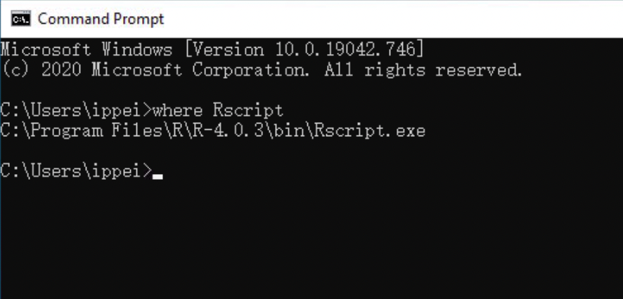
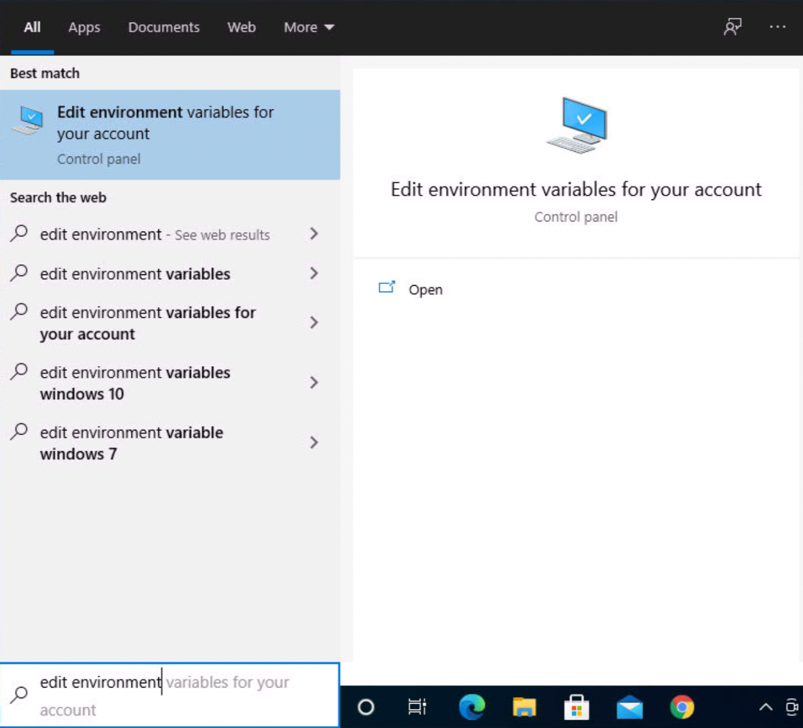
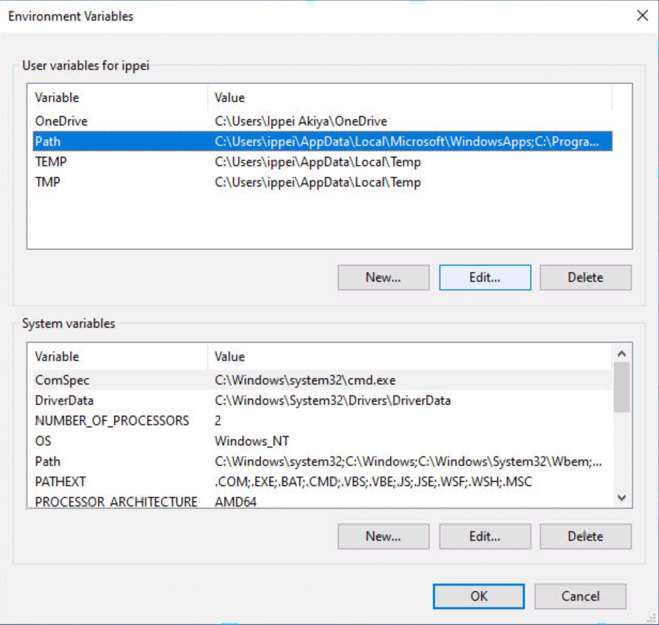
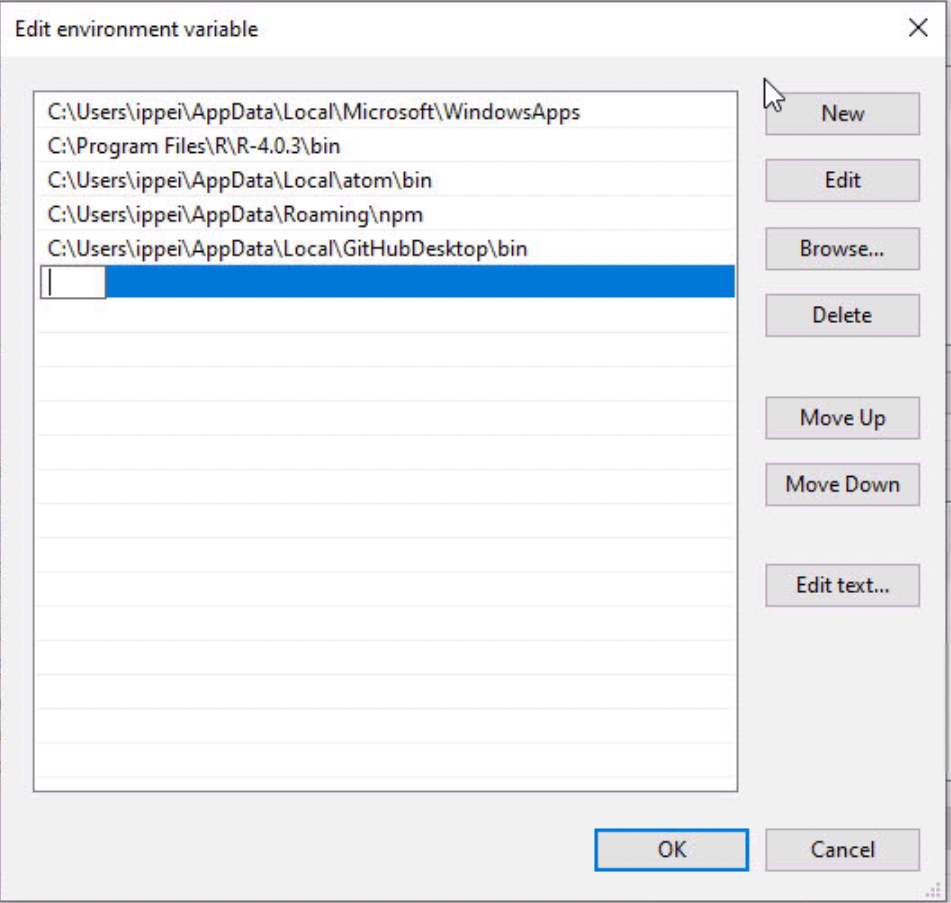

2 Installation
2.1 For windows users
2.1.1 Install and Configure R environment
Since Douhau Data Studio is built and run based on R Shiny framework, it is necessary to install and configure the R environment.
You can obtain R freely from CRAN web site.
https://cran.r-project.org/bin/windows/base/R-4.0.3-win.exe
And after finishing the download, installer R-4.0.3-win.exe should be launch and to complete R installation.
Next, user path environment for R has to be configured through the following steps.
- Check the installed R path
To check the installed R path, “where R” command into Command Prompt is very useful.
This command returns a complete path string, for example, “C:\Program Files\R\R-4.0.3\bin\Rscript.exe” , however, “\Rscript.exe” which is the last part of the path string has to be removed.
Figure 2.1: Command Prompt
- Open the Environment Variables Screen
Open the Start Search, type in “env,” and choose “Edit environment variables for your account.”Figure 2.2: Serch Edit Environment Variables
- Select “Path” and click “Edit” button.
Figure 2.3: Edit Environment Variables
- Add the R path variable
Click “NEW” button and input the path string that is confirmed in previous step 1. Please carefully the path string is excluded “\Rscript.exe” which is the last part of the path string getting from the previous step 1. For example, “C:\Program Files\R\R-4.0.3\bin\Rscript.exe” is obtained in step 1, path string should be “C:\Program Files\R\R-4.0.3\bin.”
Click “OK” button and reboot your PC to complete the “Path” environment variable configuration.Figure 2.4: Add R Path
- Install required R packages
The following R code makes the completion to install the required R packages for Douhau Data Studio. Most packages can be downloaded from CRAN repository, but R4DSXML has to install from github repository.
This R code should be run on R console.
install.packages(
c( "shiny",
"shinydashboard",
"DT",
"dplyr",
"stringr",
"SASxport",
"R.utils",
"yaml",
"devtools"
)
)
library(devtools)
install_github("i-akiya/R4DSXML/R4DSXML")2.1.2 Douhau Data Studio instration
- Get Douhau Data Studio installer
The windows installer is named douhau-data-studio.Setup.x.x.x.exe which is able to get from the release page of github repository.
https://github.com/i-akiya/DouhauDataStudio/releases
- Launch the installer
To complete to install Douhau Data Studio, douhau-data-studio.Setup.x.x.x.exe is just launched, that’s all.
2.2 For mac users
In progress